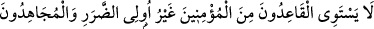

ALLAH YOLUNDA CİHAD
95- Mü’minlerden özürsüz olarak yerlerinde oturanlarla malları ve canlarıyla
Allah yolunda cihâd edenler bir olmaz. Allah, malları ve canlarıyla cihad edenleri,
derece bakımından oturanlardan üstün kıldı. Gerçi Allah hepsine de güzellik
(cennet) vadetmiştir; ama mücâhidleri, oturanlardan çok büyük bir ecirle üstün
kılmıştır.
96- Kendi katından dereceler, bağışlama ve rahmet vermiştir. Allah çok
bağışlayıcı ve esirgeyicidir.
“Mü’minlerden özürsüz olarak” cihaddan geri kalıp “yerlerinde oturanlarla
malları ve canlarıyla Allah yolunda cihad edenler bir olmaz.” Âyette savaştan geri
kalıp oturanların îmanlarına zarar gelmeyeceği, ancak îmanın hakîkatine ermekte kusurlu
olacakları bildirilmektedir.
Âyette geçen “özür” körlük, topallık, çolaklık ve felç gibi hastalık ve noksanlıklardır.
Savaşa hazırlanmaya gücü yetmemek de bu anlamdadır.
Zeyd b. Sâbit (r.a.)’dan rivâyet edildiğine göre o şöyle demiştir: “Rasûlullah
(s.a.v.)’in yanında idim. Kendisini sekînet hâli kapladı. Dizi benim dizimin üzerine
geldi ve o kadar ağırlaştı ki dizimi kıracağından korktum. Sonra ona vahyin şiddeti
sebebiyle ârız olan hal ortadan kalktı ve bana: “Yaz.” dedi. Ben de: “Oturan
mü’minlerle savaşanlar bir olmaz.” âyetini yazdım.
Yanımızda bulunan ve amâ olan İbn Ümmi Mektûm: “Ya Rasûlallah, cihada güçleri
yetmeyen mü’minlerin durumu ne olacak” diye sordu. Bunun üzerine Rasûlullah’ı tekrar
sekînet kapladı. Sonra tekrar açıldı ve: “Mü’minlerden özürsüz olarak yerlerinde
oturanlar yaz...” buyurdu.
Zeyd (r.a) diyor ki: “Allah âyetin “özürsüz olarak” bölümünü ayrı olarak indirdi, ben
de âyete ilâve ettim.”[118]
Cihaddan geri kalanlardan maksat, başkaları ile yetinildiği için yerlerinde
oturmalarına izin verilen özürsüz kişilerdir. Çünkü cihad farz-ı kifâyedir. İbn Abbas
(r.a.) ise; “Bunlar, Bedir savaşına katılmayıp da bu sefere çıkanlardır.” demiştir. Nüzul